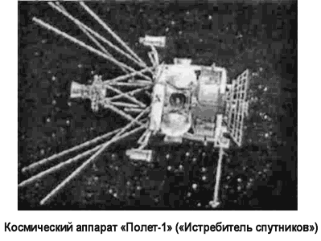

Полеты «Полетов»
1 ноября 1963 года в СССР был запущен «первый маневрирующий космический аппарат» под названием «Полет-1». Необычно пышное даже по тем временам официальное сообщение объявляло, что это первый аппарат из новой крупной серии и что в ходе полета были выполнены «многочисленные» маневры изменения высоты и плоскости орбиты. Количество и характер маневров не уточнялись, а ТАСС даже не сообщил наклонение начальной орбиты.

Второй «Полет» стартовал 12 апреля 1964 года. На этот раз параметры начальной и конечной орбит указывались полностью, что позволило западным экспертам оценить минимальный запас характеристической скорости аппарата с учетом изменения плоскости орбиты.
Эти два запуска были первыми в рамках программы испытаний системы «Истребитель спутников». Эта программа предусматривала гораздо большее количество полетов. Однако в октябре 1964 года, в результате происшедших в высшем советском руководстве перемещений, связанных с отстранением Никиты Хрущева от власти, работы по созданию «Истребителя спутников» были полностью переданы из ОКБ-52 Челомея в ОКБ-1 Королева. В связи с этим новые испытания пришлось отложить.
В бюро Королева не стали вносить слишком много изменений в уже сделанное. «Истребитель спутников» остался практически в том же виде, как это разрабатывалось вначале, но в качестве ракеты-носителя было решено использовать межконтинентальную баллистическую ракету «Р-36» конструкции Михаила Янгеля (после доработки эта ракета-носитель получила наименование «Циклон»), отказавшись от дальнейшей разработки ракеты-носителя «УР-200».
Испытания были возобновлены в 1967 году и, по сути дела, с самого начала. Программа летных испытаний нового варианта «Истребителя спутников» была рассчитана на пять лет, и ее удалось осуществить почти полностью.
На самой завершающей фазе испытаний в дело вмешалась политика. В 1972 году между СССР и США был подписан договор об ограничении стратегических вооружений и систем противоракетной обороны, который накладывал ограничения и на производство противоспутниковых систем.
В связи с этим программу испытаний свернули. Однако сама противоспутниковая система была принята на вооружение и подверглась существенной модификации.
Испытательные полеты по программе противоспутниковых систем возобновились в 1976 году и продолжались до 1978 года. На этой стадии испытаний отрабатывались усовершенствованные бортовые системы спутника, новые системы наведения, новые траектории перехвата целей.
После завершения третьей фазы испытаний состоялось еще несколько пусков в течение 1980–1982 годов, в ходе их проверялось функционирование боевых систем после длительного хранения.
После 1982 года испытательных полетов по программе «Истребитель спутников» не проводилось. В настоящее время эта система снята с вооружения как морально устаревшая.